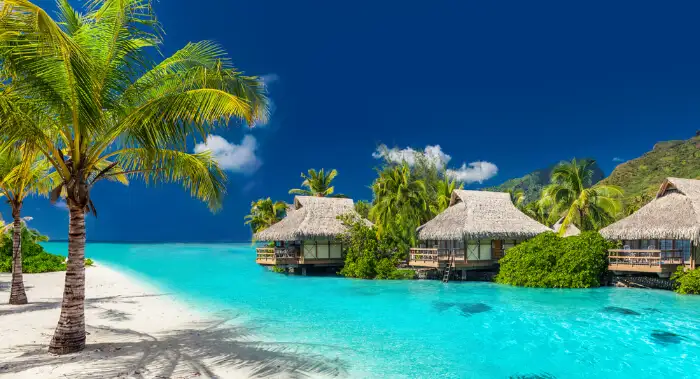
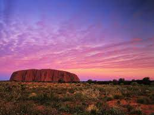

It’s got great food, stunning scenic views, the beach AND the city within a manageable radius, a multicultural population from all over the world and pretty great weather year round. We all yearn for fresh air and sea water to escape from the hustle and bustle but in Sydney, you don’t have to choose between city life and beach life. Some of the world’s most beautiful beaches like Bondi and Manly have become beacons for people from all over the world, and are located not far from the city centre. But if the crowds aren’t for you, there are also plenty of other quieter beaches to explore like the northern beaches of Avalon and Cronulla. In Sydney you don’t have to travel far to feel like you’re in a completely different place. You can be sunning yourself on Bronte Beach before breakfast, walking down the London-like streets of Paddington 15 minutes later, then eating dinner at Cabramatta which looks like a little slice of Vietnam. The diversity also goes beyond the look of neighbourhoods, the city is full of people from all corners of the world. The multiculturalism of Sydney makes it one of the most inclusive, friendly and culturally rich cities you can experience. Another tip in Sydney’s cap is the amazing array of food. There are incredible fresh food markets selling local produce and freshly caught seafood as well as some world-renowned restaurants.
2. Fiji

Fiji puts all the blissful benefits of an exotic South Pacific getaway—secluded palm-lined beaches; luxurious private islands, spas, and resorts; sparkling water as far as the eye can see—all within easy reach. Fiji is home to over 300 amazing and islands and an endless amount of activities. Whether you’re looking for family fun, a relaxing couples’ getaway, or an awe-inspiring cultural experience, there’s something for everyone. Not to mention it’s only a short flight from Australia’s East Coast. From stunning waterfalls and pristine waters, to vibrant sea life and long stretches of sandy beaches, there’s so much to take in. In particular, Taveuni is unlike anything else you’ll see with 80% of the island covered in magical tropical rainforests. A trek across the island will take you past hidden waterfalls like the spectacular Tavoro Falls, and the Signtaga Sand Dunes near the Kulukulu village – it’s like something out of Arabian nights! Not keen for the trekking part? A Captain Cook Cruises 7 night Colonial Discovery Cruise is a great way to explore the stunning vistas without any extra effort.
3. Uluru-Kata Tjuta National Park

Not only is it a spectacular natural formation, Uluru is a deeply spiritual place. You can feel a powerful presence the moment you set eyes on it. In Australia’s Red Centre lies the spectacular Uluru-Kata Tjuta National Park. Home to many ancient wonders, the park is most famous for the enormous monoliths it’s named after. Uluru and Kata Tjuta rise from the earth in all their red glory just 30 kilometres (18.6 miles) from each other. Measuring 348 metres (1140 feet) high and 9.4 kilometres (5.8 miles) in circumference, Uluru is the largest sandstone monolith in the world, while Kata Tjuta is made up of 36 giant domes spread over more than 20 kilometres (12.4 miles). Both sites remain deeply spiritual and sacred to the local Anangu people, who have lived here for more 22,000 years.